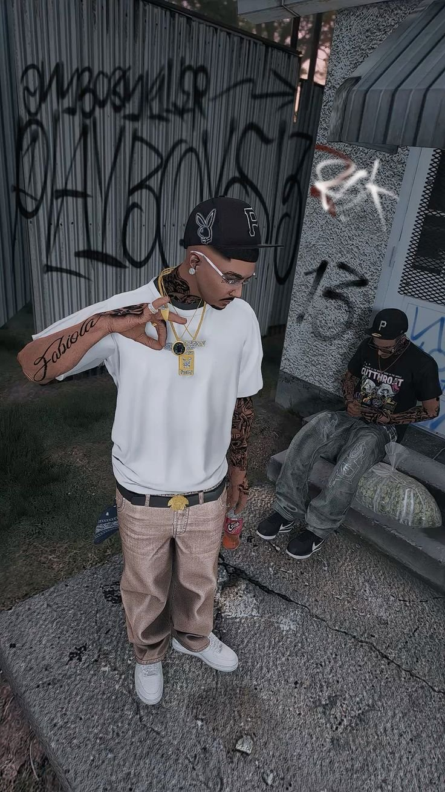
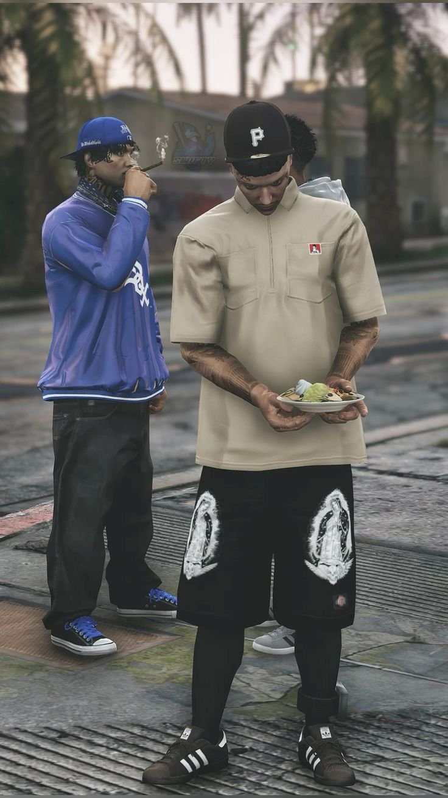
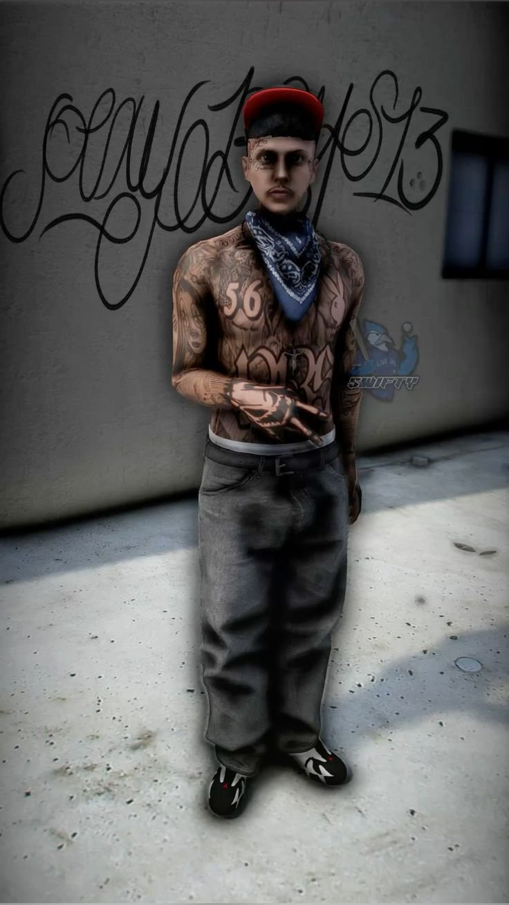
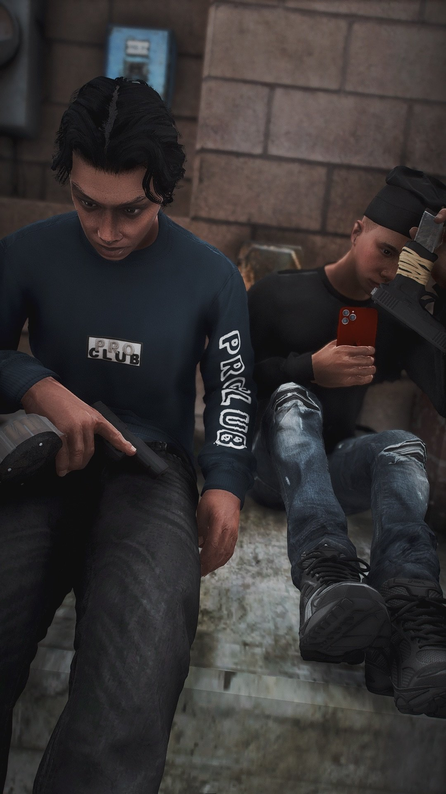
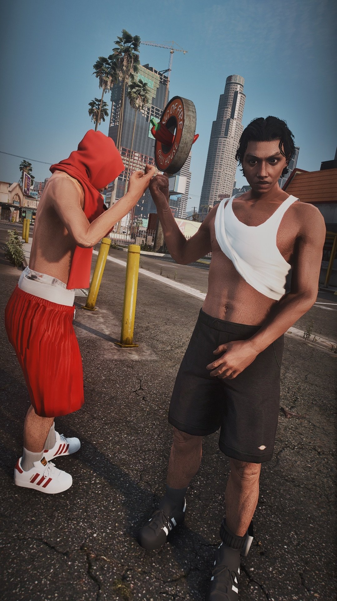
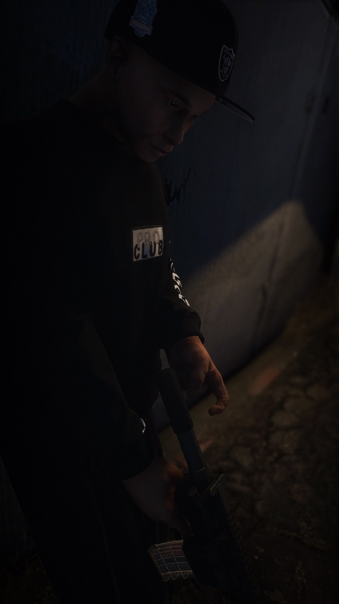

Noface WL · Dossier GTA RP · 2026
Palm TreeLocos
PTL · Clique des Playeros 13 · Long Beach, Los Santos
6
Membres actifs
P13
Playeros 13
LB
Long Beach
Défiler
Six frères que la vie a forgés dans le même creuset. Cliquez sur chaque carte pour révéler leur histoire.
Origines. Mateo Aguilar a vu le jour dans un appartement du 3ème étage, entre la 115ème et la 116ème, dans un immeuble dont l'ascenseur ne fonctionnait plus depuis 2009. Sa mère, Carmen, est arrivée du Salvador à dix-neuf ans avec une valise et le nom d'une cousine à Long Beach. Elle n'est jamais repartie. Son père, Ernesto, était présent les trois premières années — un homme de peu de mots, de beaucoup d'alcool, et d'une colère qu'il ne savait pas nommer. Il est parti un mardi matin sans laisser de message. Mateo avait six ans. Il ne se souvient de lui que par intermittence : une odeur de cigarette froide, des Rangers posées près de la porte, une voix grave qui montait la nuit.
L'enfance. Carmen a tenu la maison à bout de bras. Double shift dans une laverie industrielle en semaine, ménage chez des particuliers le week-end. Elle rentrait les mains rouges et gercées, mangeait debout au-dessus de l'évier, et trouvait encore l'énergie de demander à Mateo comment s'était passée sa journée. Il lui mentait rarement — pas par honnêteté, mais parce qu'il ne voulait pas lui ajouter du poids. Il a grandi avec ce réflexe de ne pas alourdir les gens qu'il aimait.
La musique. À dix ans il beatboxait dans la cour d'école, entouré de gamins qui tapaient sur les bancs. Ce n'était pas de la performance — c'était une façon de remplir le silence. À treize ans il écrivait ses premiers couplets dans les marges de ses cahiers de maths, des trucs maladroits sur le quartier, sur sa mère, sur un père qu'il ne connaissait pas vraiment. À quinze ans il enregistrait dans le couloir de l'appartement avec un téléphone calé contre une chaussette en guise de pop filter, sa mère qui dormait de l'autre côté de la porte. Il n'avait ni matériel, ni réseau, ni argent. Il avait l'oreille, la rigueur, et une capacité naturelle à construire des images avec des mots simples.
Le style. Sa musique n'est ni trap, ni drill pure — c'est quelque chose entre les deux avec une sensibilité narrative qu'on retrouve rarement chez quelqu'un de vingt ans. Il écrit comme quelqu'un qui a observé beaucoup et parlé peu. Ses morceaux ne glorifient pas et ne condamnent pas : ils décrivent. Le barrio tel qu'il est. Les rues à 3h du matin. Les mères qui attendent. Les hommes qui partent. Les gamins qui restent.
Le surnom. "La Eme" ne vient pas d'une affiliation — il vient du tranchant de ses paroles. Quelqu'un dans le quartier a dit un jour que quand Mateo lâchait une punchline, ça sonnait comme une sentence gravée. Pas criée. Gravée. Le surnom a tenu.
Le caractère. Mateo est calme en surface et précis dans ses réactions. Il ne s'emporte pas facilement. Il observe beaucoup avant de parler, et quand il parle, les gens écoutent — pas parce qu'il élève la voix, mais parce qu'il ne dit jamais rien pour rien. Il a un ego, mais il le gère : il sait que son arrogance de scène doit rester sur scène. Dans la clique, il est ni le chef ni le suiveur. Il est le miroir — celui qui dit ce que les autres n'osent pas formuler.
Les contradictions. Mateo vit avec une tension permanente entre ce qu'il construit musicalement et ce qu'il fait par loyauté envers la PTL. Sa carrière lui ouvre des portes dans des cercles légaux où son nom commence à circuler. Des organisateurs de soirées, des journalistes locaux, une maison de disques indépendante qui l'a contacté deux fois. Il sait que le jour où sa vie sera passée au microscope, certaines associations poseront problème. Il ne l'ignore pas. Il reporte la décision.
Ce qu'il cache. Mateo rêve de quitter Long Beach. Pas pour fuir — pour construire. Il ne l'a dit qu'une seule fois, à Lito, à 4h du matin sur le parking de l'épicerie. Lito n'a rien répondu. Ils sont restés silencieux un moment. Puis Mateo a ajouté : "mais pas avant que tout le monde soit en sécurité". Lito a hoché la tête. Ce n'est pas une promesse en l'air. C'est le genre de chose que Mateo dit et qu'il pense vraiment.
Sa relation à la PTL. Il ne s'est jamais demandé s'il était dans la bonne clique. La PTL, c'est sa famille avant d'être sa structure. Shaggon est le grand frère qu'il n'a pas eu. Lito est le seul à qui il parle de la musique sans filtre. Sueño l'amène dans des endroits où sa voix porte autrement. Et les autres — Spyder, Chuco — sont la preuve que le barrio produit des gens capables de loyauté absolue. Ça, il en fait des morceaux aussi.
Origines. Sueño Tavarez — son prénom est une promesse que ses parents s'étaient faite le soir où ils sont arrivés à Long Beach : que leur fils vivrait dans un rêve meilleur que le leur. La réalité a été plus nuancée, comme toujours. Mais Sueño porte ce prénom sans cynisme. Il a décidé très tôt que si le monde ne lui donnait pas ce rêve, il irait le prendre lui-même.
La famille. Quatrième d'une fratrie de six dans un appartement de deux chambres. Son père, Jorge, tenait une épicerie de quartier depuis vingt ans — levé à 5h, couché à 22h, toujours le même tablier bleu. Sa mère, Rosa, était femme au foyer et gérait la maison avec une organisation militaire. Dans cette famille, les ressources étaient comptées et la négociation était un sport quotidien. Sueño a appris à argumenter avant d'apprendre à lire.
L'école du sourire. En regardant son père derrière le comptoir, il a compris quelque chose que personne ne lui a enseigné : le sourire est un outil. Son père pouvait sourire à un client qui lui devait de l'argent depuis trois semaines et ressortir de la conversation avec un remboursement partiel. Sueño a absorbé ça comme une leçon fondamentale. Les gens font confiance à ceux qui semblent heureux de les voir.
Sa relation à la PTL. Il aime sincèrement chacun des membres — pas comme une loyauté de circonstance, mais comme quelque chose de viscéral. La clique est le seul endroit où il n'a pas à gérer son image. Avec les homies, le masque peut tomber. Et ça, pour quelqu'un dont la vie entière est une performance maîtrisée, c'est inestimable.
Origines. Luis-Ramirez Navarro est né à Long Beach d'un père mexicain et d'une mère hondurienne. Il a grandi en comprenant très tôt que dans cette maison, être fiable était la seule forme d'amour que tout le monde pouvait se permettre.
Sa relation à la PTL. La clique est son œuvre sans qu'il l'appelle ainsi. Chaque membre qu'il a choisi représente quelque chose qu'il reconnaît et qu'il ne peut pas être seul. Il ne dit pas "je vous aime" — il dit "je compte sur toi". Pour lui, c'est la même chose. Et les membres le savent.
Loyauté absolue. Rodrigo n'a pas de philosophie compliquée sur la fidélité. Pour lui c'est simple : les gens qui ont été là pour lui, il est là pour eux. La PTL a été là pour lui à un moment où il était seul. Ça ne s'efface pas.
Sa relation à la PTL. Il n'est pas sentimental sur le sujet. Il fait partie de la PTL parce que c'est là qu'il est le plus utile et parce que les membres lui inspirent un respect réel. Pour quelqu'un qui observe les gens avec autant de lucidité, le respect n'est pas donné facilement.
Sa relation à la PTL. Diego ne peut pas s'imaginer sans la clique. La PTL est l'endroit où il a le plus grandi, où il a rencontré ses meilleurs amis et ses plus grands défis. Marco n'est plus là. Mais les homies sont là. Et tant qu'ils sont là, il y a quelque chose à protéger.







La PTL est une clique née au cœur du set Playeros 13 sur Long Beach. Pas une dissidence, pas un groupe satellite — une émanation directe de jeunes du quartier qui ont grandi ensemble sous les mêmes palmiers, sur les mêmes blocs, et qui ont formé leur propre unité soudée au sein de la structure.
Long Beach a toujours été un carrefour. Les familles salvadoriennes, mexicaines, honduriennes s'y sont entassées génération après génération, cherchant du travail dans les ports, dans les cuisines, dans les chantiers. Leurs enfants ont grandi dans l'entre-deux : trop latinos pour certains, trop américains pour d'autres. C'est dans ce vide identitaire que la rue a prospéré. Et dans cette rue, le set Playeros 13 a imposé son nom.
La PTL est née de ce terreau. Un groupe d'amis d'enfance issus du set — des gamins qui se retrouvaient à l'ombre d'un palmier à l'angle d'un bloc, qui veillaient ensemble, qui faisaient savoir que ce coin-là avait des habitants qui ne partiraient pas. Avec le temps, leur unité s'est formalisée. Leur nom est venu naturellement : Palm Tree Locos. Le palmier était là. Il est resté.
Avant même d'avoir un nom, le groupe existe. Ce sont des amis d'enfance qui traînent ensemble, qui veillent le même bloc, qui règlent les problèmes du quartier entre eux. Pas d'organisation, pas de hiérarchie — juste un instinct commun de protection et d'appartenance.
Le groupe gagne en cohésion et en réputation dans le quartier. Les anciens du set Playeros 13 reconnaissent leur présence, leur sérieux, leur capacité à tenir un bloc sans créer de chaos inutile. La PTL est officiellement reconnue comme clique au sein du set.
Un conflit territorial avec un groupe rival met la clique à l'épreuve pour la première fois. La PTL tient. Plusieurs membres sont arrêtés, d'autres disparaissent. Ceux qui restent ressortent de cette période avec quelque chose d'indestructible : la certitude que le groupe peut survivre à n'importe quoi tant qu'il reste soudé.
La PTL change d'approche. Moins d'exposition directe, plus de structure. Le Palm Garage ouvre ses portes. L'Island Grill s'installe sur Figueroa. Les premiers revenus légaux entrent. La clique apprend à exister sur deux registres simultanément — la rue et la façade. Shaggon pose les premières règles non écrites.
Mateo sort ses premiers morceaux qui circulent dans le quartier. Sueño tisse les premiers contacts hors du bloc. Spyder et Chuco solidifient la présence terrain. Lito organise le premier Hood Day de la PTL. Pour la première fois, la clique n'est plus seulement connue pour ce qu'elle fait la nuit — elle commence à exister le jour aussi.
La PTL arrive à Los Santos avec quelque chose que peu de cliques ont : une identité construite sur du concret. Un nom qui a du poids. Des membres qui savent exactement qui ils sont. L'objectif n'est pas de tout recommencer — c'est de continuer ce qui a été commencé à Long Beach, dans un terrain neuf, avec les mêmes codes.

L'histoire de la PTL ne commence pas avec un coup de feu, une déclaration solennelle ou une nuit de violence fondatrice. Elle commence dans une chaleur de juillet, à l'ombre d'un palmier que personne n'avait songé à couper, dans une impasse entre la 115ème et la 116ème, sur un carré de béton que des gamins avaient transformé en quartier général sans le décider vraiment. C'est là, dans cet espace sans nom et sans toit, que les premières conversations ont eu lieu. Pas des conversations stratégiques. Des conversations de survie quotidienne. Qui dort où ce soir. Qui doit de l'argent à qui. Comment répondre à ce que l'autre bloc vient de faire. Comment tenir ensemble ce qui tient à peine.
Long Beach n'a jamais été une ville facile pour ceux qui n'avaient pas d'argent. À la fin des années 2000, la crise économique avait frappé les quartiers latinos de South Long Beach avec une brutalité particulière. Les familles qui avaient mis des années à s'installer — à payer leur loyer, à scolariser leurs enfants, à se faire une place — se retrouvaient soudainement à la marge. Des emplois perdus dans les ports, dans le bâtiment, dans la restauration. Des appartements trop chers pour des familles trop nombreuses. Des enfants qui grandissaient dans une insécurité économique structurelle et cherchaient dans la rue ce que les institutions ne leur offraient pas : un statut, une protection, une appartenance.
C'est dans ce contexte que le set Playeros 13 avait maintenu sa présence sur les blocs entre la 112ème et la 119ème. Pas comme une force de destruction pure — comme un tissu social parallèle. Des règles non écrites qui permettaient au quartier de fonctionner en dehors des circuits officiels. De la protection pour ceux qui payaient, de la discipline pour ceux qui dépassaient les lignes, et une forme de continuité identitaire pour les jeunes latinos qui ne savaient pas où se situer entre deux cultures qui ne les voulaient pas entièrement.
Shaggon avait dix-sept ans quand il a commencé à rassembler des gens autour de lui avec une intention que lui-même n'aurait pas su nommer clairement à l'époque. Ce n'était pas encore un plan — c'était un instinct. Il voyait des garçons du même bloc, issus du même set, qui existaient en parallèle sans vraiment former une unité. Chacun gérait ses affaires, ses coins, ses problèmes. Shaggon pensait que cette dispersion était une vulnérabilité. Que si quelque chose devait tenir dans ce quartier, ça devait tenir ensemble.
Le palmier à l'angle du bloc entre la 115ème et la 116ème était là depuis aussi longtemps que tout le monde se souvienne. Son ombre, l'après-midi, couvrait un carré de béton d'environ quatre mètres. C'est là que Shaggon commençait à traîner après 15h. Progressivement, les autres ont rejoint. Il n'y avait pas de rituel d'intégration. Pas de serment. On était là, régulièrement, fiablement. C'était suffisant.
La reconnaissance d'une clique au sein d'un set ne s'obtient pas par une déclaration — elle s'obtient par les actes accumulés sur la durée. Pendant les années 2020 et 2021, le groupe autour du palmier a commencé à se distinguer par quelque chose de rare : la constance. Ils tenaient leurs blocs. Ils répondaient présent quand le set avait besoin de bras. Ils ne créaient pas de chaos inutile.
C'est Sueño qui a eu l'idée du nom. Pas lors d'une grande réunion — dans une conversation informelle avec Shaggon, un soir où les deux regardaient le palmier depuis le bas de l'immeuble. Il a dit quelque chose comme "ce palmier, c'est nous — on a poussé là où personne nous attendait et on part pas". Shaggon a souri, ce qu'il faisait rarement. Palm Tree Locos. PTL. Le nom a circulé dans le groupe, puis dans le bloc, puis dans le set.
L'arrivée à Los Santos n'est pas une fuite de Long Beach. C'est une extension. Le quartier d'origine reste là, avec ses blocs, ses codes, son palmier à l'angle d'un immeuble qui ne sait pas qu'il a donné son nom à quelque chose. Mais Los Santos offre ce que Long Beach ne peut plus offrir au stade où la PTL en est : de l'espace. De nouveaux territoires à construire, de nouveaux réseaux à tisser, de nouvelles opportunités à convertir.
La clique arrive avec sept ans d'histoire — de vraies épreuves, de vraies reconstructions, de vrais codes. Ce n'est pas un groupe qui se crée ex nihilo dans une ville inconnue. C'est un groupe qui déplace une structure déjà solide vers un nouveau terrain.
Ils ne sont pas nés du même sang. Certains ne partagent pas la même langue d'origine. Mais quelque chose les a tissés ensemble d'une façon que seuls ceux qui l'ont vécu peuvent comprendre.
C'est Shaggon qui les a, un par un, ramenés vers un centre commun. Pas par des mots — par des actes. Diego a couvert ses arrières une nuit sans qu'on lui demande. Alejandro a mis les informations sur la table sans exiger de contrepartie. Sueño a négocié une trêve qui aurait pu mal tourner. Mateo a chanté pour l'enterrement d'un proche de Rodrigo, gratuitement, parce que c'était juste. Et Rodrigo, le plus jeune, a simplement refusé de partir quand tout le monde aurait pu s'en aller.
Dans la PTL, les rôles ne sont pas assignés par la force. Ils ont émergé naturellement : Shaggon pense, Sueño parle, Chuco observe, Mateo représente, Lito tient le moral, Spyder ne recule pas. Ensemble ils forment quelque chose qui dépasse chacun d'eux.

Trois horizons. Trois états différents d'une même ambition : exister, durer, compter.
Garé sur Figueroa, tenu par une proche de confiance. Pupusas au chicharrón, tamales salvadoriens, yuca con chicharrón. Le barrio mange ici. Revenue propre, couverture crédible — et la "sauce spéciale du chef" comme nom de code pour les commandes discrètes.
Un local retapé par les homies entre la 76ème et la 77ème. Officiellement on répare des voitures. Officieusement c'est un point de stockage, un lieu de réunion, et une laverie pour les liquidités. Quand un flic passe, il voit un garage. Rien d'autre.
BBQ, musique live, tournois de basket. Familles du quartier, commerçants, têtes du voisinage. La PTL comme force sociale bienveillante. L'image qui s'installe, bloc par bloc.
Livreur, chantier, vendeur. Chaque membre maintient une activité officielle qui justifie ses revenus, lui permet de circuler librement et crédibilise une vie légale.
Radio locale, soirées, clips tournés dans le quartier. La PTL investit dans la musique : sessions dans l'arrière du garage, beats sur laptops, SoundCloud et YouTube. Pub, recrutement, intimidation en même temps.
Principal revenu. La PTL contrôle la distribution sur son territoire : cocaïne, méthamphétamine, héroïne. Organisation en cercles pour protéger les têtes. Spots qui tournent, transactions rapides, zéro exposition inutile.
Les commerces et trafiquants du territoire paient une taxe de protection. La menace implicite suffit. Revenue stable, prévisible, qui entretient une relation de long terme avec le tissu local.
Sur cibles précises, ponctuellement. Outil de pression plus que source de revenu systématique. Un message envoyé, une ligne posée, un acteur remis à sa place.
Opérations ciblées, préparées, toujours hors territoire PTL. Jamais dans le barrio. Recel de véhicules en parallèle — Palm Garage comme point de réception discret.
Prise en charge de contrats pour des groupes majeurs. Dice et jeux d'argent sur le bloc — cercles réguliers qui font circuler le cash au sein de la clique. Intimidation de témoins sur demande.
Le style des Palm Tree Locos n'est pas un uniforme — c'est une signature. Assez reconnaissable pour ceux qui savent lire, assez sobre pour passer inaperçu des mauvaises personnes.
Beige, crème ou kaki bien repassés. Shorts Dickies pour la chaleur. L'élégance de rue californienne.
Chemises à carreaux ouvertes sur un tee blanc, polo beige Dickies. Couleurs neutres à sombres.
Cortez, Air Force, Adidas Superstar. Blanc, noir, crème. Rien d'ostentatoire.
Snapback unie ou brodée P, casquette Playboy. Portée droite ou légèrement sur le côté.
Palmier, 13, PTL. Écriture scripte dans le cou, sur les avant-bras. Visible mais jamais criard.
Chaîne dorée fine, cross pendant, montre sobre. Bandana bleu en poche ou au poignet.
Le quartier a son propre rythme. La PTL en est le battement.
Les PTL sont implantés dans la zone centrale de Long Beach, entre la 112ème et la 119ème avenue, de la 142ème au nord jusqu'à la 144ème au sud. Un quadrilatère qu'ils connaissent dans ses moindres recoins.
La 115ème est l'axe principal. C'est là que les transactions importantes ont lieu, que les messages sont envoyés, que la présence se fait la plus visible. Le palmier qui a donné son nom à la clique est toujours là, à l'angle d'un bloc, à l'ombre duquel tout a commencé.
Le langage du barrio, les codes de la rue. Pour comprendre ce qui se dit, il faut savoir comment ça se dit.
Bientôt 4 ans de roleplay à travers plusieurs univers — GTA V, RDR2 et DayZ. Plus de 3000 heures de jeu sur FiveM, ce qui représente une profondeur de connaissance des mécaniques RP difficile à acquérir autrement.
Une trajectoire complète : civil, patron d'entreprise, LSPD jusqu'au lead illégal. Chaque rôle a apporté une couche supplémentaire de compréhension des dynamiques du serveur, des interactions entre factions, des leviers narratifs qui rendent un RP mémorable.
L'objectif avec la PTL n'est pas de poser une structure sur le papier et d'improviser en jeu. C'est d'amener une clique préparée, cohérente, dont chaque membre connaît son personnage et son rôle dans un ensemble plus grand.
Mateo "La Eme" Aguilar enregistre dans l'arrière du Palm Garage, sur un laptop posé sur un établi, avec des panneaux de mousse cloués au mur. Le son sort brut, sans fioriture — et c'est exactement pour ça qu'il résonne dans le quartier. Voici un exemple de l'univers sonore du barrio.
Ce que la PTL apporte sur le serveur, au-delà du dossier. Une philosophie de jeu, une façon d'exister dans Los Santos.
Notre projet repose sur la création d'un mouvement avec une mentalité inspirée des quartiers américains. L'objectif est de construire une identité forte, reconnaissable et cohérente, capable de s'imposer dans le South tout en rendant hommage à ceux qui ont marqué le quartier.
Le groupe fonctionne en clique avec une base soudée, mais une forte liberté individuelle. Chaque membre doit pouvoir exister par lui-même, développer son personnage et créer ses propres histoires. Le RP en solo est pleinement encouragé — beefs individuels, rivalités personnelles, évolutions indépendantes.
La vie de quartier est au centre du jeu. Une présence à pied, des scènes simples, des interactions naturelles et une activité régulière permettent de construire un environnement crédible et vivant. Privilégier le réalisme plutôt que le spectacle inutile.
Chaque personnage possède un profil différent : rappeur, influenceur, étudiant, hustler. Cette diversité crée un RP riche avec des interactions multiples et des histoires qui ne se ressemblent pas. Un musicien qui côtoie un dealer qui côtoie un gars qui fait semblant d'être civil — c'est ça, le barrio.
Des conflits peuvent exister entre membres d'une même clique pour renforcer la cohérence et éviter un jeu figé. Ces dynamiques créent du développement de personnage et du contenu RP constant. Un groupe sans friction interne n'est pas un groupe — c'est un décor.
Une attention particulière portée à la qualité du jeu. Le RP doit être travaillé, cohérent et immersif, avec une dimension théâtrale dans les interactions et une vraie construction des scènes. L'objectif : proposer un style de jeu propre, sérieux et marquant qui se distingue.

Les Palm Tree Locos ne se déposent pas comme un concept abstrait. Ils arrivent avec une histoire, une cohérence interne, des personnages dont chaque décision de jeu s'enracinera dans quelque chose de réel et de construit.
Ce dossier est la promesse d'un RP ancré, nuancé, où la violence n'est pas le premier recours mais la conséquence d'une pression. Où la culture est aussi réelle que la criminalité. Où chaque interaction sera portée par des personnages qui savent exactement qui ils sont et d'où ils viennent.
Playa · Familia · Respeto